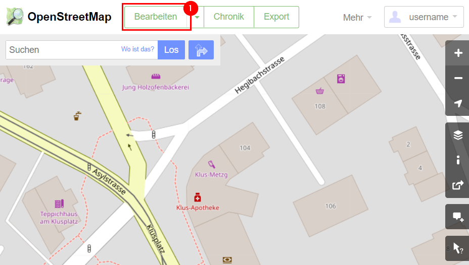
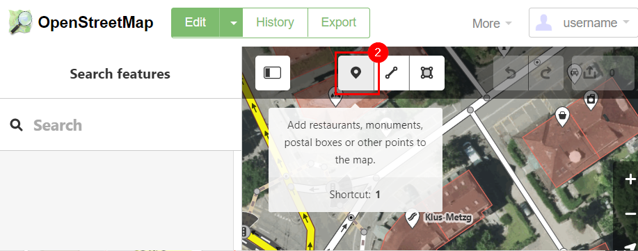
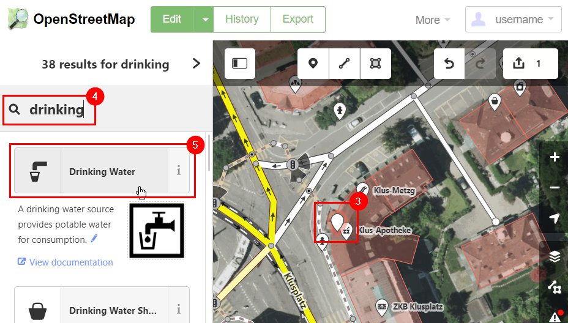
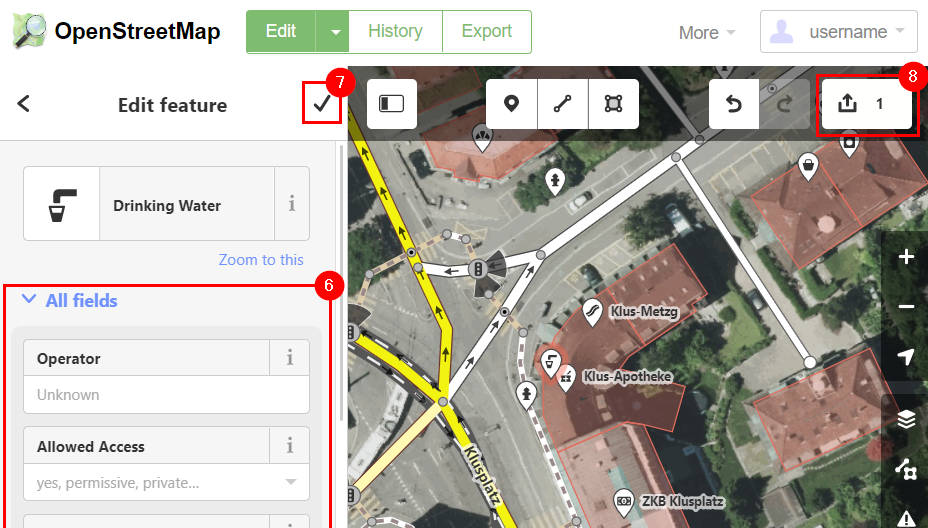
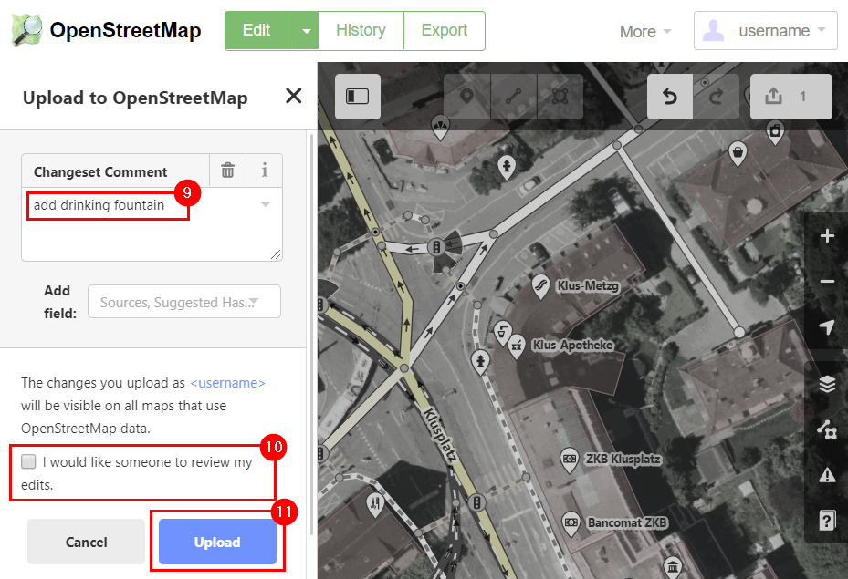
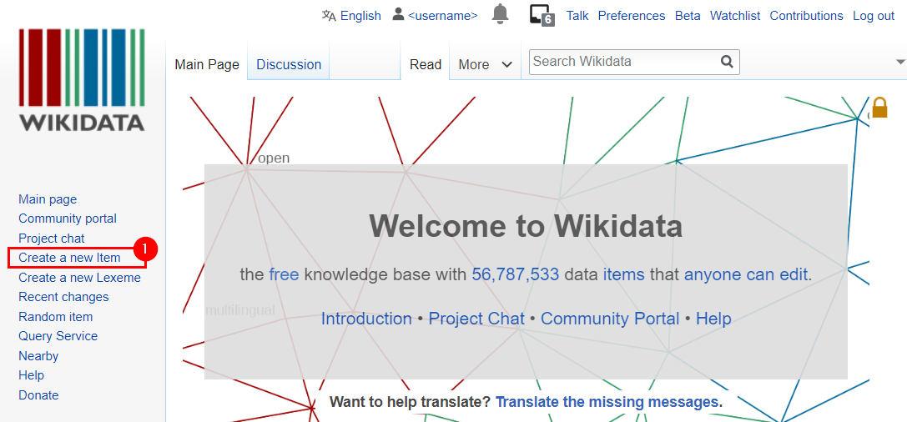
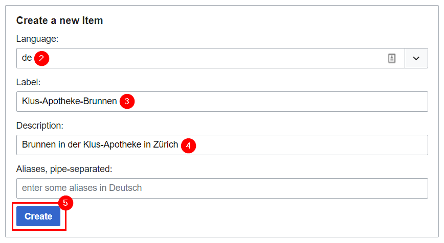
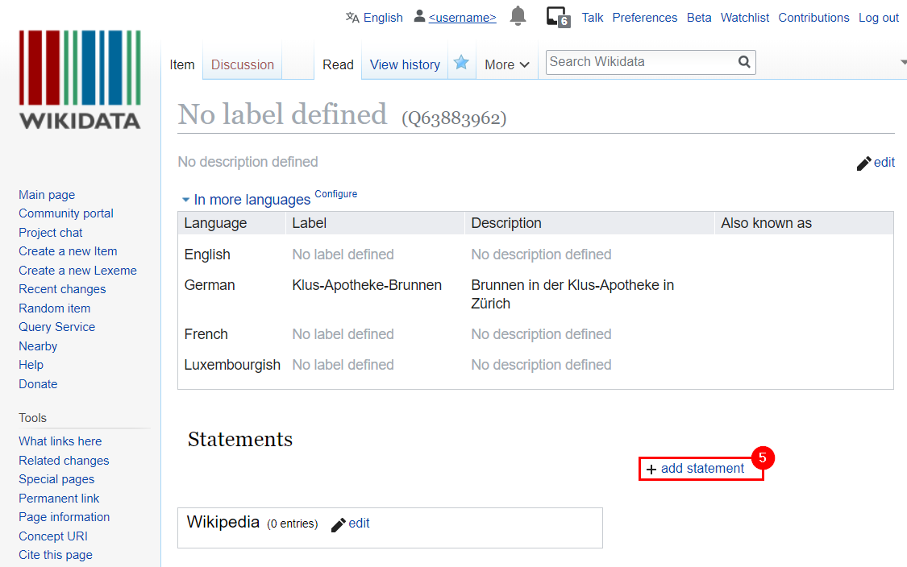
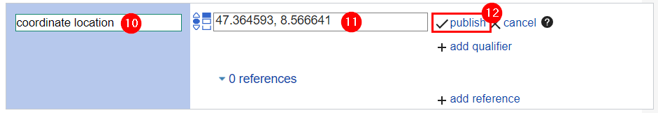

This guide explains how to create a new fountain to be displayed. This is done by modifying one or both of the underlying databases, either OpenStreetMap or Wikidata. After the fountain is created in the underlying database, the application database can be reprocessed to fetch the newly created fountain. If you are creating a fountain that does not yet exist, use OpenStreetMap if you want your contribution to be seen by more people and use Wikidata if you want to add images as well.
You can only enter editing mode if you have zoomed in sufficiently.
1. Select the iD editor if you use the dropdown or just select "edit".
2. Select the node creation tool. If the fountain basin is very large, you can also use the way creation tool.
3. Click location on the map where fountain should be created.
4. In left panel, search for "drinking water" (or "fountain", if the fountain is decorative)
5. In the search results, select the type of entity that applies.
6. If there are any more properties to define, you can do that in the left panel. Please consider defining the tags "drinking_water", "wheelchair", "bottle", and "dog".
7. Confirm your changes to the newly created fountain. If you want to create another fountain, go back to step 3.
8. When you are ready to upload your changes, click the "upload" button. Until you complete the last step, all changes remain in your browser.
9. Enter a short description of your changeset like "add drinking fountain".
10. If you aren't sure whether your edits were correct, tick the "review request" box.
11. When you are ready to commit your changes, click the "upload" button.
To fetch the data from the databases, a reprocessing needs to be initiated. Please wait about 5-10 minutes before reprocessing, because changes to OpenStreetMap take some time to become available.
a. If you created a Wikidata or OpenStreetMap counterpart to a pre-existing fountain, then use that fountain's "refresh data" button to perform a geographically restricted refresh (fast)
b. If you created a fountain that did was not on the map before, then perform a full city refresh by clicking the "info" icon and in "Settings", initiate full data reprocessing (slow)
1. Create new Wikidata item by clicking link in the left sidebar.
2. Select the language in which you wish to provide the item name and description. Additional languages can be added later.
3. Provide a label for the fountain. This is what will appear as the fountain's name.
4. Provide a short description of the fountain. This can include what kind of fountain it is, the artist, and the location
5. Create a new statement for the newly created item.
6. Define the statement type as "instance of"
7. Give value "drinking fountain" or "fountain" if the fountain is decorative.
8. Read and accept the terms and conditions.
9. Click "publish" to save the statement.
10. Create a new statement "coordinate location".
11. Provide coordinates in the latitude, longitude format.
12. Click "publish" to save the statement.
To fetch the data from the databases, a reprocessing needs to be initiated.
a. If you created a Wikidata or OpenStreetMap counterpart to a pre-existing fountain, then use that fountain's "refresh data" button to perform a geographically restricted refresh (fast)
b. If you created a fountain that did was not on the map before, then perform a full city refresh by clicking the "info" icon and in "Settings", initiate full data reprocessing (slow)